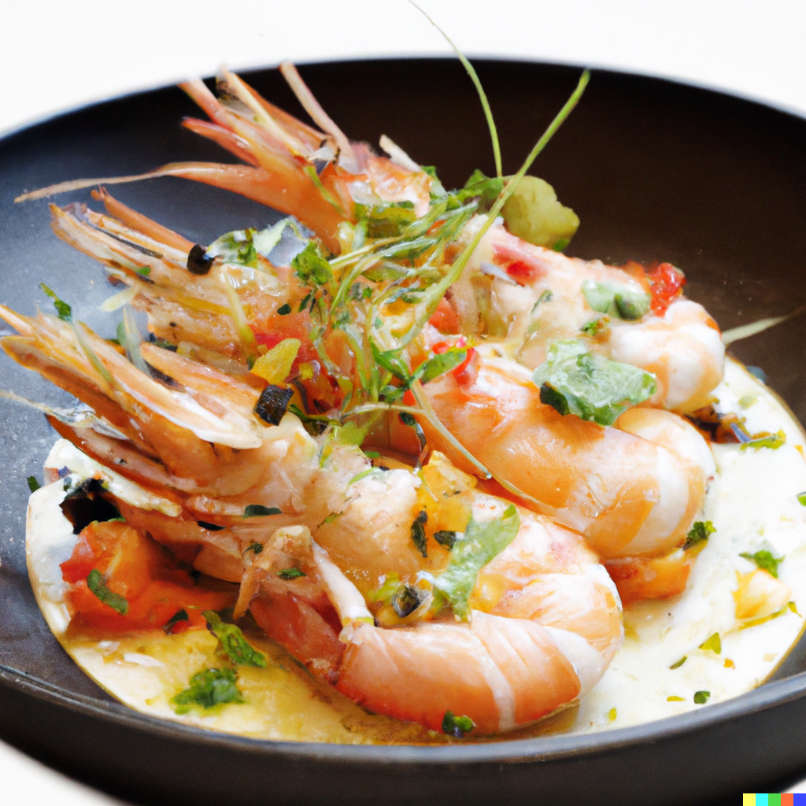

Shrimp recipie

The 3 Michelin-starred chef creates a classic shrimp dish but taking this dish and very much making their own.
Ingredients
- tablespoons butter, divided
- 1 pound peeled and deveined bay shrimp
- 1 tablespoon lemon juice, divided
- 1 pinch garlic salt, or to taste
- salt and ground black pepper to taste
Instructions:
- Melt 6 tablespoons butter in a large skillet over high heat. Add shrimp; cook and stir in hot butter until
browned, about 2 minutes. Reduce heat to medium-low.
- Stir in 1 1/2 teaspoons lemon juice, garlic salt, salt, and pepper; cook until heated through, about 1
minute. Remove from heat; stir in remaining 2 tablespoons butter and 1 1/2 teaspoons lemon juice.
Go To Home Page